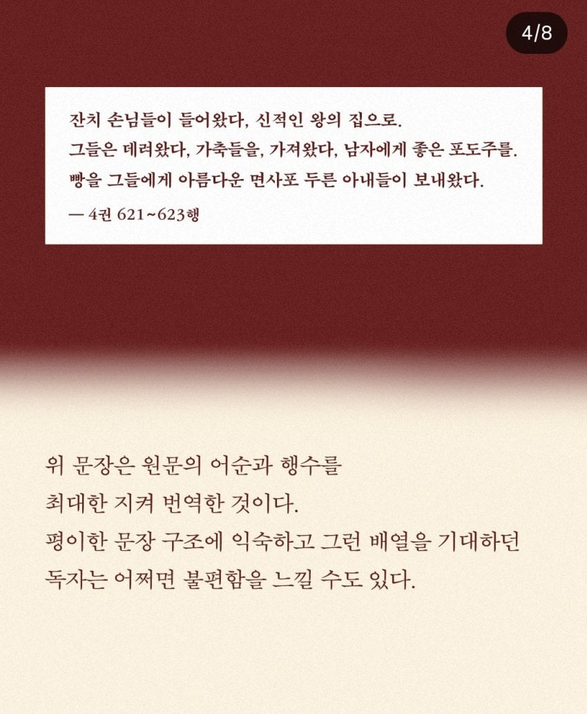
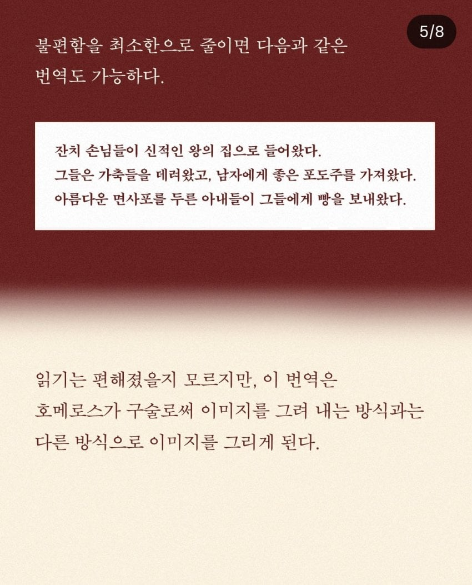
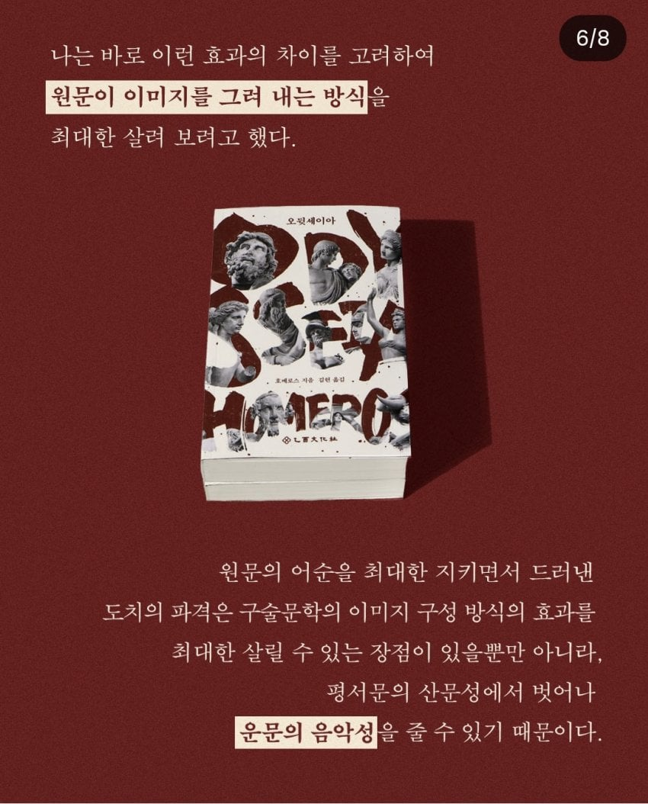
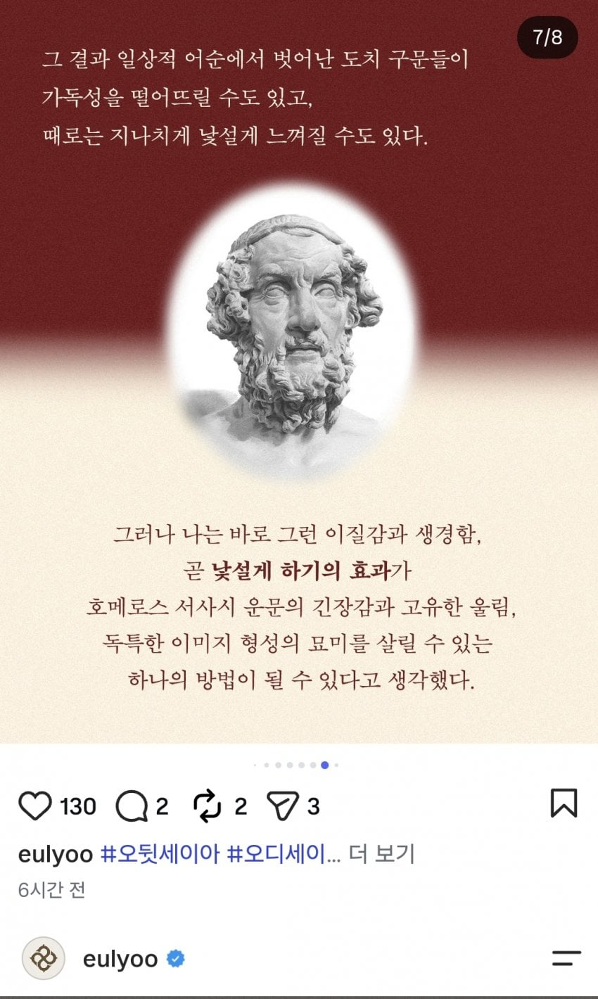
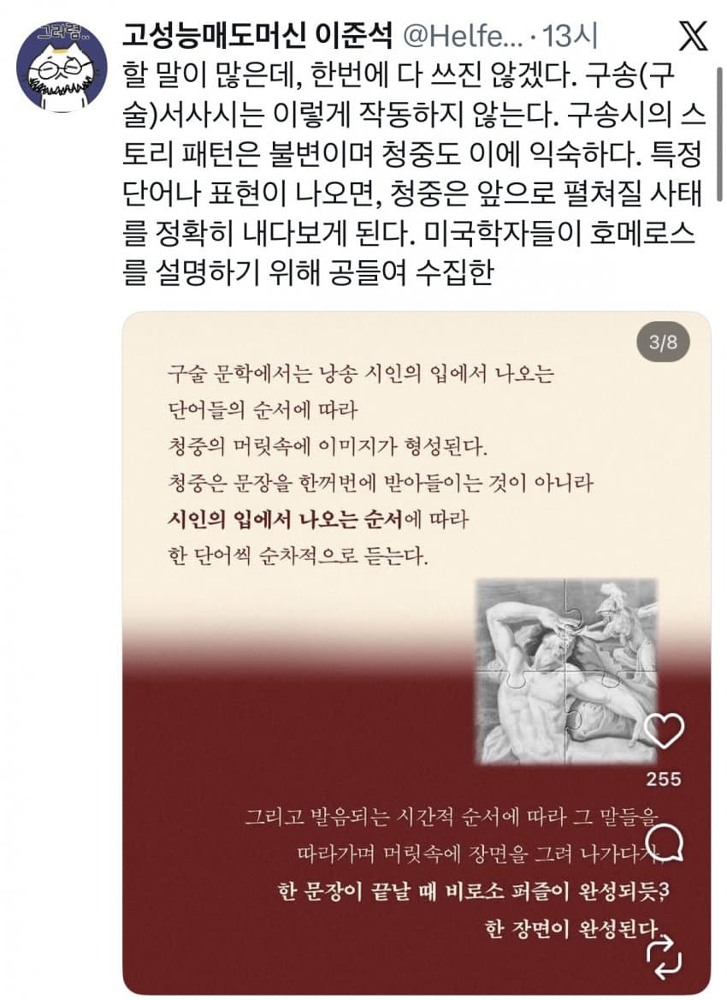
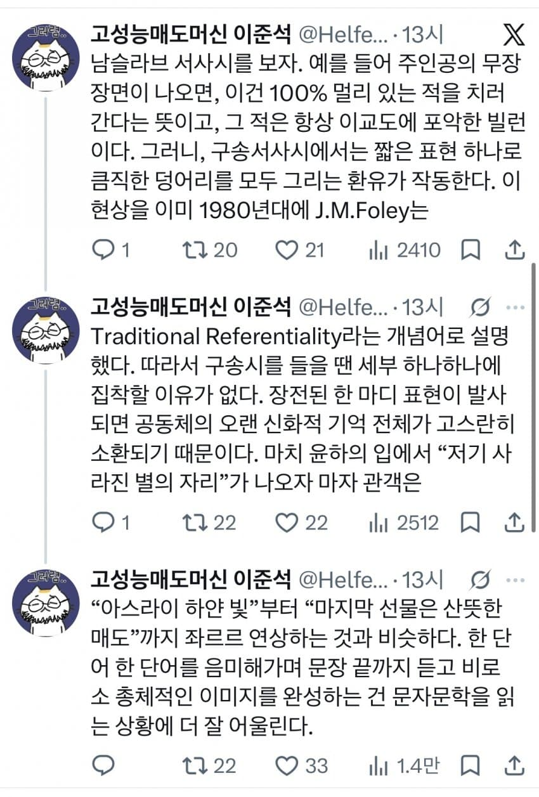
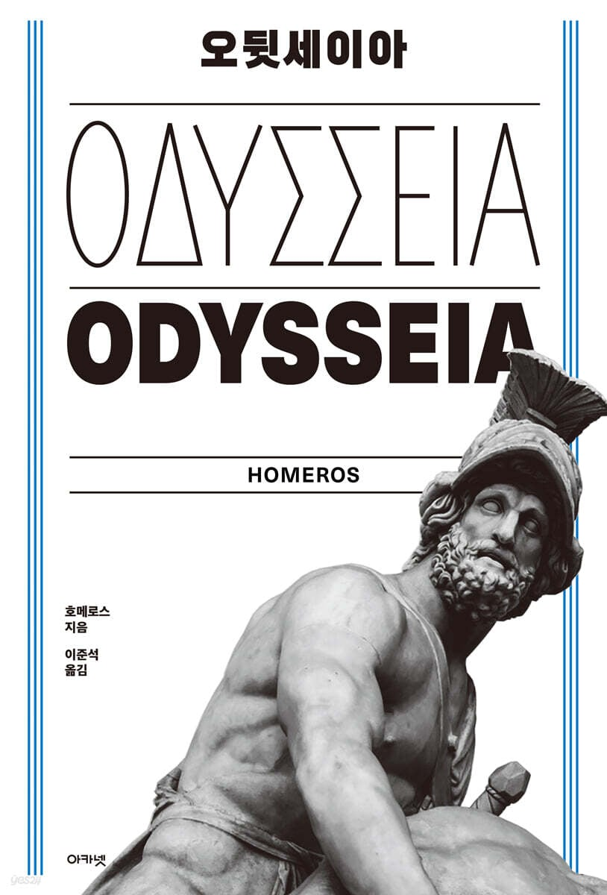

놀란의 영화 오디세이 개봉 이후 원작인 호메로스의 오뒷세이아로 인해 국내 학계에서 전문가들 사이에서 번역 배틀 발생함







김헌
(프랑스 스트라스부르 제2대학 서양고대학 박사)
(서울대 인문학 교수)
VS
이준석
(스위스 바젤대학교 호메로스의 서사시 연구 박사 학위)
학계에서 오뒷세이아 전문가 사이에 번역 배틀이 시작됨
댓글
수집 당시 댓글 31개
여름날 · 3 일 전
음악성 살린 버전은 앞부분이라도 운율과 음악성을 어케느끼면되는건지 낭독 예시를 보여주면좋겠다..
백수드립넷 · 2 일 전
어 페이스~
고양이좋아 · 3 일 전
전자로 한 챕터만 읽어도 읽기 힘들어서 때려치울듯
pentatonic · 3 일 전
위에꺼는 원래 오뒷세이아 읽어 본 사람이 읽으면 좋을듯 아예 안읽어본 입장으로는 술술 읽히는게 더 편할듯
동티모르양말통제관 · 3 일 전
전자는 박살난 초기 ai번역본같음
보라매 · 3 일 전
둘다 박사면 호메로스 전공한 사람 말이 맞음 이야기 자체보다 서사시 원문의 운율감 느끼고 싶으면 억지로 한국어에 끼워맞춘게 아니라 영역본을 읽는게 맞다
純角ユニ · 3 일 전
영역본도 절대 다수는 후자 방식으로 번역한걸로 많이 봄
보라매 · 3 일 전
그래도 한국어보다는 라틴어권이 어순 차이가 적으니까 그대로 냅둔 부분도 짜맞춘 부분도 어색함이 훨씬 덜하겠지 위에꺼는 그냥 끔찍한 기계번역기 돌린 느낌임
전립선비대위원장 · 3 일 전
천병희 교수님 오딧세이아가 가장 보기 편합니다.
아라고른 · 3 일 전
벨즈 · 3 일 전
뭐야 방구석찐따들의 키배가아니라 진짜들의 싸움이라고? 개쩐다
realpolitik · 3 일 전
오디오북으로 낼땐 구술문학에 맞게 내고 텍스트로 낼땐 읽기편하게 내면
純角ユニ · 3 일 전
낭독 하는 성우들 머리 터질듯 ㅋㅋㅋ
반다 · 3 일 전
잠깐 소리내서 읽어봤는데 개 빡쎄네;;; 영문법이 익숙하면 저 구어문법이 어색할지라도 이해할 수는 있을거 같은데, 동양의 문법으론 확실히 들어서 이해하긴 힘드네
헤론 · 3 일 전
적당히 타협해 ㅡㅡ 교수들 키배 뜨는거 보면 양쪽 의견 적당히 섞으면 되더라
도로보 · 3 일 전
이거 ㄹㅇ임 근데 애초에 그래서 첨예한 논쟁이 되는 것이기에..
물에술탄듯 · 3 일 전
이준석 번역본껄로 일리아스 봤는데 좋았음
시라누이Q · 3 일 전
웅장하구만
햄부기사냥꾼 · 3 일 전
이거보고 천병희 번역본 샀다
SaraDiamante · 3 일 전
암컷 · 3 일 전
아예 파격적으로 산문으로 바꿔서 내주는 곳은 없나 서사시 읽기 힘든데ㅋㅋ
마감 · 3 일 전
저둘 말고 천병희판 봐라
리트리버귀여옹 · 3 일 전
저 둘도 아닌 댓글에나온 천병희도 아닌 번역본 보고있었는데 댓글보고 천병희판으로 다시봐야겠다 마침 밀리에 있네 개꿀
지금 · 2 일 전
그리스는 천병희 선생님것만 보라고 배웠음
청사과맛사탕 · 2 일 전
좀 과하긴 한 것 같은데 전자는 사실 저걸 느끼고 싶은 사람은 영어로라도 보는 게 나은 것 같음 한국어로 번역된 건 좀
댕댕댕댕 · 2 일 전
얼마 전에 알빠노로 번역된거 봄
비열한고라니 · 2 일 전
두사람이 팡크라티온으로 결론내고 승자만 나오면 됨
대단한평론가평론가 · 2 일 전
없다 번역 개념 뒤질래 차린다 정신 맞아야
SeinundZeit · 2 일 전
천병희 선생님은 이미 돌아가셔서 이런 병림픽을 볼 일이 없다는게 복된 일이다. 난 이준석과 정암학당 번역을 더 선호하는데, 왜냐면 이 사람들 책은 주석 읽는 재미가 쏠쏠하기 때문이다. 전자책으로 주석 보기가 좀 편했으면 좋으련만.
배용준 · 2 일 전
둘 다 오뒷세이아네ㅋㅋㅋ 어디선 오디세이아, 어디선 오딧세이아. 이젠 오뒷까지 나왔구만
종합병원 · 2 일 전
일본발음은 오듓세이아임